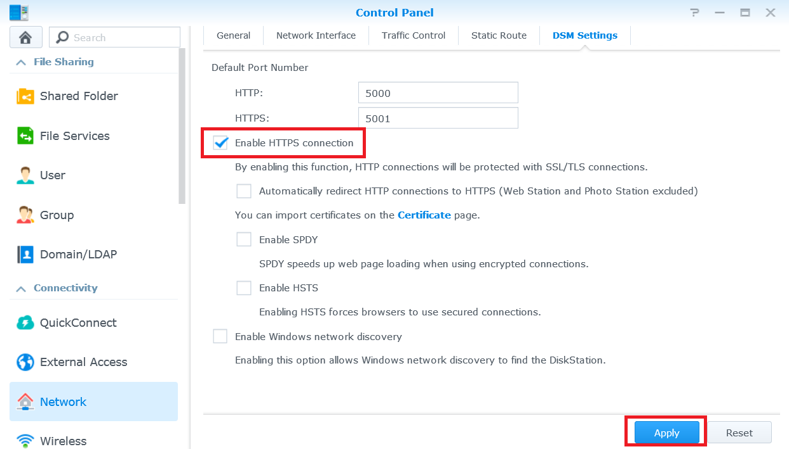
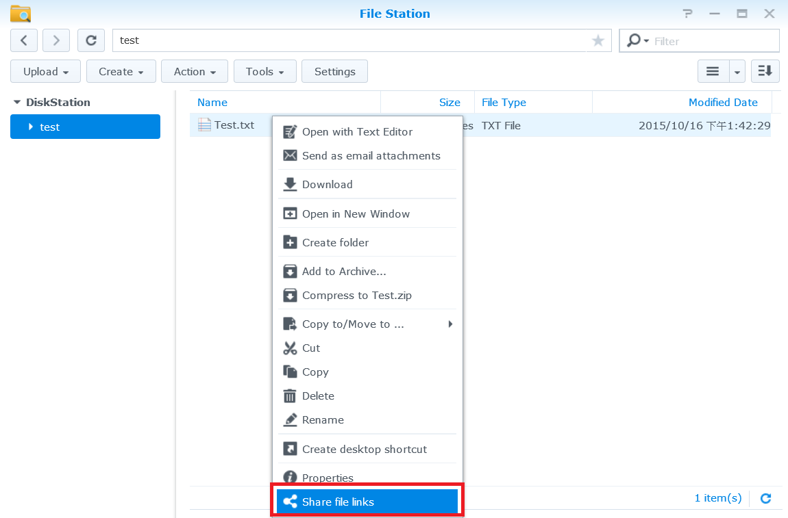

Synology NAS'ınıza İnternet üzerinden erişin ve dosya paylaşın

Genel Bakış
QuickConnect ile, bağlantı noktası yönlendirme kurallarını veya diğer karmaşık ağ ayarlarını belirlemeden internet yoluyla Synology NAS'a kolayca bağlanabilirsiniz. QuickConnect, Quickconnect.to/example gibi basit bir özelleştirilebilir adres aracılığıyla bağlanmanızı sağlar.
1. QuickConnect'in kurulması
- Denetim Masası > QuickConnect öğesine gidin.
- QuickConnect öğesini etkinleştir kutusunu işaretleyin.

- Synology Hesabınız yoksa
Bir Synology Hesabında oturum açın ya da kaydolun'a tıklayın. Gereken bilgileri girerek Tamam'a tıklayın. Synology Hesabınız varsa hesap bilgilerinizi girin.

- QuickConnect ID alanında kendi QuickConnect ID'nizi oluşturun. Ardından Uygula'ya tıklayın.

- QuickConnect bağlantı bilgileriniz görüntülenir. Synology NAS'ınıza erişmek için bu bağlantıları kullanın. Bu örnekte, DSM adresi şudur: http://Quickconnect.to/YourID.

- QuickConnect DSM bağlantısını görmüyorsanız Gelişmiş'e tıklayarak DSM'nin etkin olduğundan emin olun.

- Artık Synology NAS'ınıza erişmek için QuickConnect DSM bağlantısını kullanabilirsiniz!

2. QuickConnect'i kullanarak NAS'ınızda dosya paylaşın
QuickConnect etkinken bağlantı noktası iletme hakkında endişelenmeden Synology NAS'ınızda kayıtlı dosyaları kolayca istediğiniz kişiyle paylaşabilirsiniz.
- Dosyalarınızı güvenli biri biçimde paylaşmak için öncelikle HTTPS bağlantısını etkinleştirin. Şuraya gidin: Denetim Masası > Ağ.
- HTTPS bağlantısını etkinleştir kutusunu işaretleyin ve Uygula üzerine tıklayın.

- Ardından QuickConnect için dosya paylaşımını etkinleştirin. Denetim Masası > QuickConnect öğesine gidin.
- Gelişmiş üzerine tıklayın ve Dosya Paylaşımı kutusunun işaretlendiğinden emin olun.

Not:
Gelişmiş QuickConnect ayarlarını yapılandırırken Synology NAS'ınızın alan adını veya yerel IP adresini kullanarak DSM oturumu açmanızı öneririz.
- QuickConnect kullanarak dosya paylaşmaya hazırsınız. File Station uygulamasını açarak paylaşmak istediğiniz dosyaya veya klasöre sağ tıklayın. Ardından bağlam menüsünde Dosya bağlantılarını paylaş öğesine tıklayın.

- Bir dosya paylaşma bağlantısı oluşturulur. Klasörü/dosyayı indirmeleri için bu bağlantıyı aileniz ve arkadaşlarınızla paylaşmanız yeterlidir.